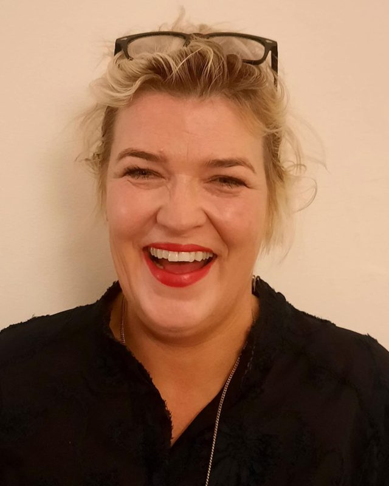

Marie Antoinette Kalager Sølverud
Advokat, daglig leder og godkjent mekler
Over 20 års erfaring som advokat, samt godkjent mekler hos Barne-, ungdoms- og familieetaten. Behersker flytende fransk. Anbefalt advokat fra foreningen «2 Foreldre» og «Mannsforum», med bred erfaring innenfor barnefordelings- og barnevernssaker.
NorskFranskEngelsk
Bakgrunn og erfaring
Erfaring
- Advokat Flatebø (2003–2006)
- Advokatfirmaet Riisa & Co (2006–2009)
- Advokat og daglig leder i Advokatfirmaet Sølverud AS (2010–nå)